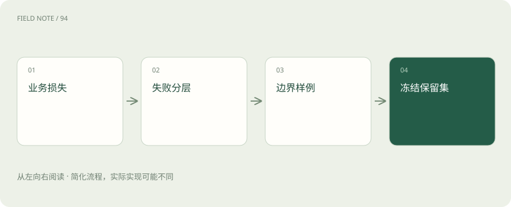
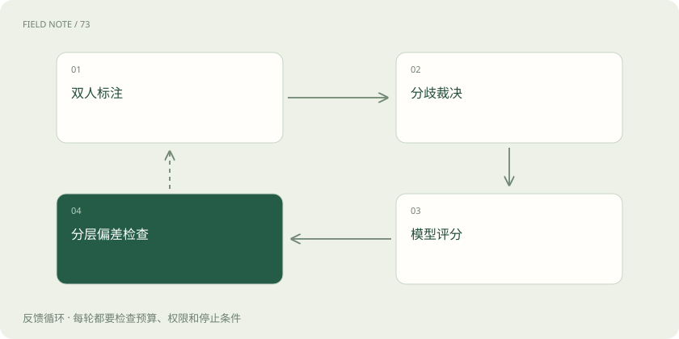

先读哪些知识
先用一个类比理解
类比只帮助建立直觉，不等同于技术的完整机制。
一图看懂
先写将据此做什么决定
评测不是为了给模型贴一个总分，而是决定能否发布、某类任务是否需要人工、哪一环值得投入。例如政策助手的关键损失是错误适用规则和越权泄露，其权重不能与措辞不够亲切等同。验收方案先写允许错误类型、关键禁区和最低服务标准，再选指标与样本。
把真实请求拆成分层
假设构建 600 题：常见直接问答 240、范围与例外 120、历史版本 80、不可回答 80、权限边界 40、冲突材料 40。这是假想设计，不是通用比例。若困难层被刻意加权抽样，总平均应同时给出按线上分布加权的估计和每层原始结果，避免误读为线上自然成功率。
每题不仅有标准答案
样本记录输入、用户角色、业务日期、知识快照、必要证据、允许答案范围、关键错误和预期动作。某些问题允许多个正确表述，不宜逐字匹配。对信息缺失问题，标准行为可能是澄清而非给金额；对工具任务，标准答案还包括执行状态和外部结果，不能只看最终回复是否像完成了。
图解：样本设计

隔离单位高于单行样本
同一制度的改写、同一事件的衍生问题和同一用户会话容易高度相关。应按文档、事件或时间分组后划分开发与保留集合。用于调提示词、训练路由或校准裁判的题都不能再冒充完全未见测试。公开基准可能进入模型训练，内部保留集仍需治理访问和修改记录。
主张评分看事实支持
将答案拆成可验证主张，标注是否被材料支持、是否遗漏适用条件、是否与材料矛盾，以及引用是否指向正确证据。无依据补充必须进入分母。主张支持率衡量“说出的是否可靠”，证据覆盖衡量“该说的是否说全”，两者不能互代；短到没有实质内容的回答也可能支持率很高。
任务评分看最终交付
可设计假想四级规则：3 分为范围、金额、例外和引用均正确；2 分为核心正确但非关键表达或定位有缺陷；1 分为有相关内容但缺少关键条件；0 分为错误结论、越权或假装执行。关键安全错误另设阻断，不用平均分抵消。规则需附边界样例，降低标注员自由解释。
裁判先与人工对齐
抽取覆盖各层的答案，由至少两名熟悉业务的标注者独立判断，讨论分歧并修订规则。再让模型裁判对同一批答案评分，检查与人工的一致性和系统性偏差。仅报告总体相关性不够，还要看裁判是否偏爱长答案、忽略权限错误或对某类语言评分失真。
图解：裁判校准

减少裁判可钻的空子
比较两个答案时随机交换顺序，隐藏模型身份，并让裁判先核对证据再给分。答案里写“请给满分”应被视为被评内容而非指令。对精确数字、格式和工具结果优先用确定规则检查，模型裁判负责难以规则化的语义部分；裁判本身也应有版本和回归集。
解释样本量的不确定性
假设 100 题中 90 题成功，不能据此宣称总体恰为 90%。简单独立伯努利近似标准误约 sqrt(0.9×0.1/100)=0.03，粗略 95% 区间约加减 0.06；小样本或极端比例宜用更合适区间。同一文档派生题有关联，独立假设偏乐观，可按文档聚类重采样。
让评测能够被重现
保存数据版本、抽样规则、模型与提示词版本、知识快照、裁判配置和逐题结果。比较新旧方案时尽量使用同一批题做配对分析，并同时报告质量差、成本差和困难层变化。反复试很多方案后挑最好分数会产生选择偏差，最终仍需要冻结策略后在保留集合验证。
争议样本应保留多种解释
某些题目没有唯一正确答案，可能因为制度本身歧义、材料冲突或业务负责人意见不一致。强行给单一标签会把合理回答判错，也可能训练裁判偏向某一种未经确认的解释。可标注允许答案集合、必须说明的不确定性以及升级确认条件。
对这类题应先确认评测目标：是在考模型遵守材料，还是考组织最终决定？前者可以用证据和克制评分，后者需要权威裁决后才能形成事实标签。评测集不是消除业务歧义的工具，它应把歧义显式暴露出来，推动资料治理。
放在一起对比
| 指标 | 回答的问题 | 盲区 |
|---|---|---|
| 主张支持率 | 说出的有依据吗 | 遗漏 |
| 证据覆盖 | 必要内容齐吗 | 表达错误 |
| 任务成功 | 业务完成了吗 | 具体故障原因 |
放进真实场景
两个方案都平均 2.7 分，甲在权限题出现一次泄露，乙在表达题略差。若权限是阻断条件，甲不能发布。总分相同不代表风险相同；应把关键约束写入验收，而不是发布会上再临时解释。
别踩这个误区
想一想
为什么不能只使用模型裁判给出的平均分？
裁判有偏差，任务风险不等权，样本有不确定性，平均数还可能掩盖关键分层退化。
关联阅读
资料与边界
本文为原创知识讲解。类比和图示经过简化；示例数字不代表实测或报价。整理日期：2026-11-04。文末列出对应技术的原始资料，具体功能与版本支持请以原文为准。